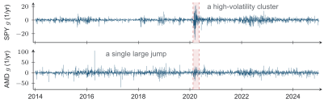

What persists during a volatile period?
1 Short answer
Volatility clustering concerns persistence in movement size. Large gains and large losses can occur in the same turbulent period, so evidence of clustering can inform risk without determining the next direction.
2 Worked explanation
What persists when direction is hard to predict? Volatility clustering describes persistence in the size of movements. A turbulent period can contain both gains and losses. We measure direction with signed growth rates and movement size with their absolute values.
First convert consecutive prices into growth rates. For asset , the observation interval divides the log price ratio:
A change from 100 to 101 USD/share over year gives a log return and a growth rate . The rate is large because we divide a small one-day change by a small fraction of a year. If that same log-price change occurred on each of 252 trading days, the accumulated log change would be 2.507. Here, we use the per-year scale to record one observed day; a forecast requires a model for the days that follow.

What do we see? This is the figure from L3a’s Volatility Clustering section. The shaded March-2020 period contains many large movements of both signs in SPY and AMD. The isolated April-2016 AMD spike is one large jump. Clustering concerns a sequence of large movements, so we distinguish that turbulent period from the isolated spike.
The lecture measures persistence using autocorrelation, the linear association between observations separated by a specified number of time steps. Applying it to signed growth rates asks whether positive or negative deviations tend to recur. Applying it to growth magnitudes asks whether large or small movements tend to recur. Positive magnitude autocorrelation across several lags is evidence of persistence in movement size.
Why does this matter for a model? A fixed volatility uses the same uncertainty scale after calm and turbulent days. Clustering suggests that recent movement sizes contain information about upcoming risk. When we reach the lattice and GBM models, we can ask whether their assumptions preserve or discard that information.
Try it. If signed growth has little autocorrelation but magnitude has persistent positive autocorrelation, can we infer the sign of tomorrow’s change?